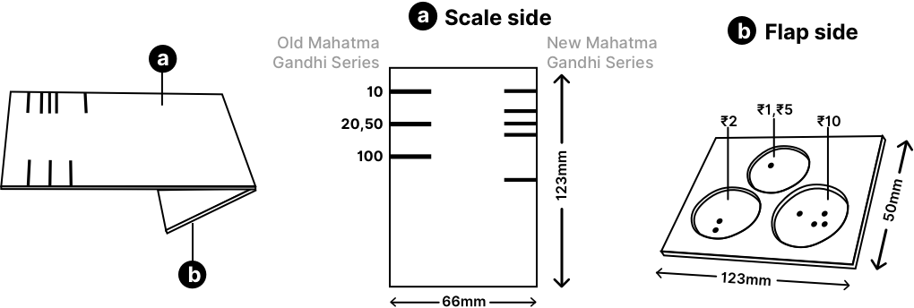

Note-M: Currency reader
There are 3 primary parts of the tool:
1. The scale of the denominations present on Bothe sides of the scale. Left side of the scale defines the old mahatma Gandhi series notes and the right denotes the new mahatma Gandhi series.
2. A flap has been provided to help the visually impaired to secure the bank note on to the scale before measuring.
3. Circular mould like shapes on the flap provide identifying different denominations of the coins.
"A tool/aid for the visually impaired to identify the currency denominations in their daily transactions."
How to use:
Align to corner
The note has to be placed along the length of the scale between two surfaces by aligning.
Check Old/New
If the note has a width smaller/larger than the scale’s width it should be identified as Old.
Fold the Note
After holding the note in place the free edge of the note has to be folded over to the scale side and to be held with finger.
Find the Mark
The note’s edge has to be felt with the finger which ends at a mark and the reading of the mark has to be remembered.
View the case study for more
While designing this there were other solutions which got dropped and you can read the whole process in detail here.